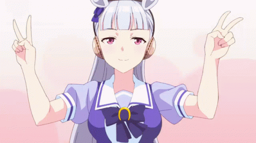
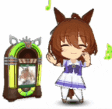
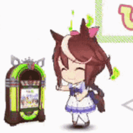

Las chicas caballos, conocidas como "Umamusume" (llamadas mas correctamente con el termino Kenomomimi), son la principal caracteristica y cara de el anime y juego de Umamusume: Pretty Derby, estas "Umas" son chicas con oreja y cola de caballo, que tienen la habilidad de correr a velocidades impresionantes, estas mismas estan inspiradas en caballos reales que existen o existieron alguna vez en japon.

Estas "Umas" suelen estudiar en su propia academia, La cademia Tracen, pero te preguntaras, ¿Que estudiaran ahi?, pues la respuesta es sencilla, estas chicas estudian todo sobre carreras, desde como correr, como cuidar su cuerpo para evitar lesiones y como poder llegar a ser las mejores corredoras de japon.